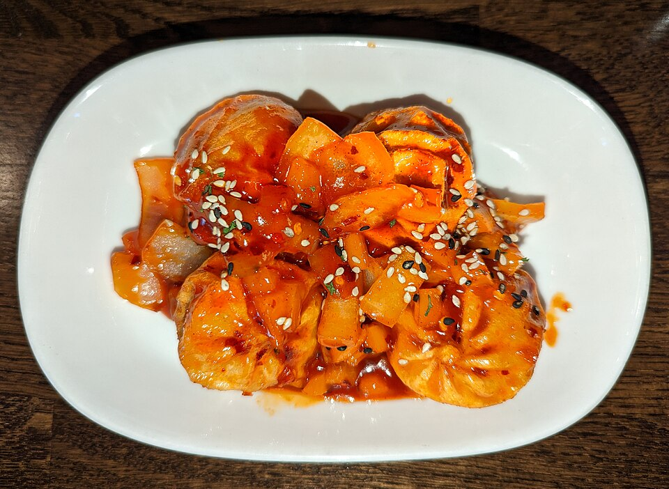
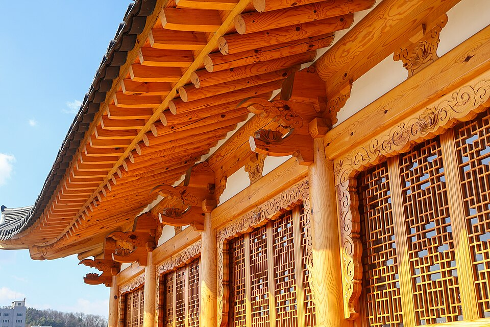

Ẩm thực và điểm đến Jeonbuk qua video: Bibimbap, chợ và nhà hanok ở Jeonju
Hướng dẫn về các quán bibimbap và tteokgalbi, khu chợ, nhà nghỉ hanok và điểm tham quan xuất hiện trong video du lịch về Jeonju, thành phố Ẩm thực của UNESCO.
Jeonju: thành phố ẩm thực qua video du lịch
Jeonju, thành phố chính của tỉnh Jeonbuk, là Thành phố Ẩm thực của UNESCO và nổi tiếng nhất với Làng Hanok, khu nhà truyền thống Hàn Quốc. Các món đặc trưng gồm bibimbap Jeonju, tteokgalbi (chả sườn bò băm viên nướng), hanjeongsik (bữa ăn nhiều món kiểu Hàn) và các món ăn vặt đi kèm makgeolli (rượu gạo) trong các con hẻm makgeolli của thành phố. Dưới đây là các quán và địa điểm được giới thiệu trong video về ẩm thực đường phố Jeonju, bibimbap nguyên bản, chợ đêm, Làng Hanok và lịch trình hai ngày.
Nơi ăn uống
Hankook Jib

📍 Hankook Jib · Naver Map · Google Maps
Nơi thưởng thức bibimbap Jeonju, đặc biệt là phiên bản phủ thịt bò sống ướp (yukhoe bibimbap). Quán xuất hiện trong video như một địa chỉ để nếm món nổi tiếng nhất của thành phố.
Gyodong Tteokgalbi
📍 Gyodong Tteokgalbi · Naver Map · Google Maps
Quán phục vụ tteokgalbi, chả làm từ sườn bò băm nướng. Vì đây là món đặc sản Jeonju ngang hàng với bibimbap, bạn có thể cân nhắc nếu còn chỗ cho một bữa khác.
Da Urang Dumplings

📍 Da Urang Dumplings · Naver Map · Google Maps
Cửa hàng bán bánh bao (mandu), được giới thiệu trong video như một điểm dừng tiện lợi khi đi dạo và ăn vặt quanh thành phố.
PNB Bakery (Pungnyeon Jegwa)
📍 PNB Bakery · Naver Map · Google Maps
Tiệm bánh nổi tiếng với Choco Pie, món quà vặt được yêu thích của Jeonju. Du khách trong video ghé đây để mua đồ ăn nhẹ hoặc quà lưu niệm.
Oehalmeonisomssi Cafe
📍 Oehalmeonisomssi Cafe · Naver Map · Google Maps
Một quán cà phê thích hợp để nghỉ chân khi đi dạo quanh Làng Hanok, được giới thiệu như nơi ngồi nghỉ giữa các bữa ăn.
Chợ Nambu
📍 Chợ Nambu · Naver Map · Google Maps
Chợ truyền thống nơi bạn có thể thưởng thức ẩm thực đường phố. Trong các video về ẩm thực đường phố và chợ đêm Jeonju, chợ được nhắc đến như nơi dạo qua các quầy hàng và vừa đi vừa ăn.
Nơi lưu trú và khám phá
Hanok Hotel

📍 Hanok Hotel · Naver Map · Google Maps
Cơ hội ngủ qua đêm trong nhà hanok truyền thống. Đây là nơi lưu trú xuất hiện trong các video về 24 giờ hoặc hai ngày ở Jeonju.
Làng tranh tường Jaman
📍 Làng tranh tường Jaman · Naver Map · Google Maps
Khu dân cư có các con hẻm đầy tranh tường, được giới thiệu như một tuyến đi bộ với nhiều điểm chụp ảnh.
Bảo tàng Quốc gia Jeonju

📍 Bảo tàng Quốc gia Jeonju · Naver Map · Google Maps
Bảo tàng giới thiệu lịch sử Jeonju và vùng lân cận, là lựa chọn hay nếu bạn muốn tìm hiểu văn hóa giữa các bữa ăn.
Công viên Deokjin

📍 Công viên Deokjin · Naver Map · Google Maps
Công viên được giới thiệu như nơi ngắm hoàng hôn, một cách nhẹ nhàng để kết thúc ngày.
Di chuyển
Một kế hoạch thoải mái là nhận phòng tại Hanok Hotel và dành một ngày đi bộ quanh Làng Hanok: ăn tại Hankook Jib hoặc Gyodong Tteokgalbi, ăn vặt ở PNB Bakery và Da Urang, rồi nghỉ tại Oehalmeonisomssi Cafe. Làng tranh tường Jaman và chợ Nambu có thể được gộp vào cùng ngày đi bộ. Bảo tàng Quốc gia Jeonju và Công viên Deokjin nằm xa khu Làng Hanok hơn, nên nếu có hai ngày, hãy dành chúng cho ngày thứ hai và canh giờ ghé Công viên Deokjin vào lúc hoàng hôn. Vui lòng kiểm tra giờ mở cửa và địa chỉ chính xác trước khi đi.
Quán ăn & địa điểm trong video
- Hanok Hotel (한옥 호텔) Nhà nghỉ hanok truyền thống Naver Map Google Maps
- Hankook Jib (한국집) Bibimbap Jeonju với thịt sống ướp Naver Map Google Maps
- Chợ Nambu (남부시장) Ẩm thực đường phố trong chợ truyền thống Naver Map Google Maps
- PNB Bakery (Pungnyeon Jegwa) (풍년제과 (PNB)) Choco Pie Naver Map Google Maps
- Da Urang Dumplings (다우랑 (만두)) Bánh bao Naver Map Google Maps
- Gyodong Tteokgalbi (교동떡갈비) Tteokgalbi (chả sườn bò băm viên nướng) Naver Map Google Maps
- Oehalmeonisomssi Cafe (외할머니솜씨) Quán cà phê Naver Map Google Maps
- Làng tranh tường Jaman (자만벽화마을) Làng tranh tường Naver Map Google Maps
- Bảo tàng Quốc gia Jeonju (국립전주박물관) Bảo tàng Naver Map Google Maps
- Công viên Deokjin (덕진공원) Ngắm hoàng hôn Naver Map Google Maps
Vị trí và giờ mở cửa có thể thay đổi, hãy kiểm tra bản đồ trước khi đi.
Video liên quan


Bài viết khác
- Seoul trên màn ảnh: Làng Baeksa, phố ốc đảo Yongsan và Chợ Namdaemun qua phim tài liệu 'Documentary 3 Days' của KBS
- Jeonnam trên màn ảnh: Quần đảo Sinan hẻo lánh và chợ rạng sáng từ 'Documentary 3 Days' của KBS
- Gangwon trên màn ảnh: Nhà ga hành khách quốc tế Sokcho và chợ 5 ngày Jeongseon
- Daegu trên màn ảnh: Con hẻm xe máy và các quán lều nướng bulgogi than tổ ong ở Bukseong-ro
- Các địa điểm trong video Jeonnam: Từ Yeosu đến Suncheon và Boseong
- Gyeongbuk qua các video: Quán cà phê, nhà hanok và di tích Silla ở Gyeongju